Last updated: 2022-06-03
Checks: 7 0
Knit directory: propeller-paper-analysis/
This reproducible R Markdown analysis was created with workflowr (version 1.7.0). The Checks tab describes the reproducibility checks that were applied when the results were created. The Past versions tab lists the development history.
Great! Since the R Markdown file has been committed to the Git repository, you know the exact version of the code that produced these results.
Great job! The global environment was empty. Objects defined in the global environment can affect the analysis in your R Markdown file in unknown ways. For reproduciblity it’s best to always run the code in an empty environment.
The command set.seed(20220531) was run prior to running
the code in the R Markdown file. Setting a seed ensures that any results
that rely on randomness, e.g. subsampling or permutations, are
reproducible.
Great job! Recording the operating system, R version, and package versions is critical for reproducibility.
Nice! There were no cached chunks for this analysis, so you can be confident that you successfully produced the results during this run.
Great job! Using relative paths to the files within your workflowr project makes it easier to run your code on other machines.
Great! You are using Git for version control. Tracking code development and connecting the code version to the results is critical for reproducibility.
The results in this page were generated with repository version b239441. See the Past versions tab to see a history of the changes made to the R Markdown and HTML files.
Note that you need to be careful to ensure that all relevant files for
the analysis have been committed to Git prior to generating the results
(you can use wflow_publish or
wflow_git_commit). workflowr only checks the R Markdown
file, but you know if there are other scripts or data files that it
depends on. Below is the status of the Git repository when the results
were generated:
Ignored files:
Ignored: .Rproj.user/
Ignored: data/cold_warm_fresh_cellinfo.txt
Ignored: data/covid.cell.annotation.meta.txt
Ignored: data/heartFYA.Rds
Ignored: data/pool_1.rds
Untracked files:
Untracked: code/SimCode.R
Untracked: code/SimCodeTrueDiff.R
Untracked: code/auroc.R
Untracked: data/CTpropsTransposed.txt
Untracked: data/CelltypeLevels.csv
Untracked: data/TypeIErrTables.Rdata
Untracked: data/appnote1cdata.rdata
Untracked: data/cellinfo.csv
Untracked: data/nullsimsVaryN_results.Rdata
Untracked: data/sampleinfo.csv
Untracked: output/Fig1ab.pdf
Untracked: output/Fig1cde.pdf
Untracked: output/example_simdata.pdf
Untracked: output/fig2d.pdf
Untracked: output/legend-fig2d.pdf
Untracked: output/typeIerrorResults.Rda
Note that any generated files, e.g. HTML, png, CSS, etc., are not included in this status report because it is ok for generated content to have uncommitted changes.
These are the previous versions of the repository in which changes were
made to the R Markdown (analysis/Sims2vs20CT.Rmd) and HTML
(docs/Sims2vs20CT.html) files. If you’ve configured a
remote Git repository (see ?wflow_git_remote), click on the
hyperlinks in the table below to view the files as they were in that
past version.
| File | Version | Author | Date | Message |
|---|---|---|---|---|
| Rmd | b239441 | bphipson | 2022-06-03 | update simulations |
library(speckle)
library(limma)
library(edgeR)
library(pheatmap)
library(gt)Source the simulation code:
source("./code/SimCode.R")
source("./code/SimCodeTrueDiff.R")
source("./code/auroc.R")For these simulations we are looking to see whether the different methods perform differently when the number of cell types is vastly different. Here we examine the extreme case of 2 cell types versus 20 cell types, with and without true differences simulated.
We will consider the scenario when the number of samples per group is 5, as this is a reasonable number of samples for current datasets, and also where differences between methods can be seen (as opposed to n=20 where all methods perform well).
We again simulate cell type counts under a Beta-Binomial hierarchical model, and compare the following models:
One thousand simulation datasets are generated for each scenario: * Two cell types, no differences * Two cell types, true differences * Twenty cell types, no differences * Twenty cell types, true differences
Here I assume that the two cell types have true proportions 0.2 and 0.8, with n=5 samples in each group.
# Sim parameters
set.seed(10)
nsim <- 1000
depth <- 5000
# True cell type proportions
p <- c(0.2, 0.8)
# Parameters for beta distribution
a <- 10
b <- a*(1-p)/p
# Decide on what output to keep
pval.chsq <- pval.bb <- pval.lb <- pval.nb <- pval.qlf <- pval.pois <- pval.logit <- pval.asin <-
pval.coda <- matrix(NA,nrow=length(p),ncol=nsim)nsamp <- 10
for(i in 1:nsim){
#Simulate cell type counts
counts <- SimulateCellCounts(props=p,nsamp=nsamp,depth=depth,a=a,b=b)
tot.cells <- colSums(counts)
# propeller
est.props <- t(t(counts)/tot.cells)
#asin transform
trans.prop <- asin(sqrt(est.props))
#logit transform
nc <- normCounts(counts)
est.props.logit <- t(t(nc+0.5)/(colSums(nc+0.5)))
logit.prop <- log(est.props.logit/(1-est.props.logit))
grp <- rep(c(0,1), each=nsamp/2)
des <- model.matrix(~grp)
# asinsqrt transform
fit <- lmFit(trans.prop, des)
# For two cell types, set robust = FALSE
fit <- eBayes(fit, robust=FALSE)
pval.asin[,i] <- fit$p.value[,2]
# logit transform
fit.logit <- lmFit(logit.prop, des)
fit.logit <- eBayes(fit.logit, robust=FALSE)
pval.logit[,i] <- fit.logit$p.value[,2]
# Chi-square test for differences in proportions
n <- tapply(tot.cells, grp, sum)
for(h in 1:length(p)){
pval.chsq[h,i] <- prop.test(tapply(counts[h,],grp,sum),n)$p.value
}
# Beta binomial implemented in edgeR (methylation workflow)
meth.counts <- counts
unmeth.counts <- t(tot.cells - t(counts))
new.counts <- cbind(meth.counts,unmeth.counts)
sam.info <- data.frame(Sample = rep(1:nsamp,2), Group=rep(grp,2), Meth = rep(c("me","un"), each=nsamp))
design.samples <- model.matrix(~0+factor(sam.info$Sample))
colnames(design.samples) <- paste("S",1:nsamp,sep="")
design.group <- model.matrix(~0+factor(sam.info$Group))
colnames(design.group) <- c("A","B")
design.bb <- cbind(design.samples, (sam.info$Meth=="me") * design.group)
lib.size = rep(tot.cells,2)
y <- DGEList(new.counts)
y$samples$lib.size <- lib.size
y <- estimateDisp(y, design.bb, trend="none")
fit.bb <- glmFit(y, design.bb)
contr <- makeContrasts(Grp=B-A, levels=design.bb)
lrt <- glmLRT(fit.bb, contrast=contr)
pval.bb[,i] <- lrt$table$PValue
# Logistic binomial regression
fit.lb <- glmFit(y, design.bb, dispersion = 0)
lrt.lb <- glmLRT(fit.lb, contrast=contr)
pval.lb[,i] <- lrt.lb$table$PValue
# Negative binomial
y.nb <- DGEList(counts)
y.nb <- estimateDisp(y.nb, des, trend="none")
fit.nb <- glmFit(y.nb, des)
lrt.nb <- glmLRT(fit.nb, coef=2)
pval.nb[,i] <- lrt.nb$table$PValue
# Negative binomial QLF test
fit.qlf <- glmQLFit(y.nb, des, robust=FALSE, abundance.trend = FALSE)
res.qlf <- glmQLFTest(fit.qlf, coef=2)
pval.qlf[,i] <- res.qlf$table$PValue
# Poisson
fit.poi <- glmFit(y.nb, des, dispersion = 0)
lrt.poi <- glmLRT(fit.poi, coef=2)
pval.pois[,i] <- lrt.poi$table$PValue
# CODA
# Replace zero counts with 0.5 so that the geometric mean always works
if(any(counts==0)) counts[counts==0] <- 0.5
geomean <- apply(counts,2, function(x) exp(mean(log(x))))
geomean.mat <- expandAsMatrix(geomean,dim=c(nrow(counts),ncol(counts)),byrow = FALSE)
clr <- counts/geomean.mat
logratio <- log(clr)
fit.coda <- lmFit(logratio, des)
fit.coda <- eBayes(fit.coda, robust=FALSE)
pval.coda[,i] <- fit.coda$p.value[,2]
}pcut <- 0.05
type1error <- matrix(NA,nrow=length(p),ncol=9)
rownames(type1error) <- rownames(counts)
colnames(type1error) <- c("chisq","logbin","pois","asin", "logit","betabin","negbin","nbQLF","CODA")
type1error[,1]<-rowSums(pval.chsq<pcut)/nsim
type1error[,2]<-rowSums(pval.lb<pcut)/nsim
type1error[,3]<-rowSums(pval.pois<pcut)/nsim
type1error[,4]<-rowSums(pval.asin<pcut)/nsim
type1error[,5]<-rowSums(pval.logit<pcut)/nsim
type1error[,6]<-rowSums(pval.bb<pcut)/nsim
type1error[,7]<-rowSums(pval.nb<pcut)/nsim
type1error[,8]<-rowSums(pval.qlf<pcut)/nsim
type1error[,9]<-rowSums(pval.coda<pcut)/nsim gt(data.frame(type1error),rownames_to_stub = TRUE, caption="Type I error: 2 cell types")| chisq | logbin | pois | asin | logit | betabin | negbin | nbQLF | CODA | |
|---|---|---|---|---|---|---|---|---|---|
| c0 | 0.853 | 0.854 | 0.842 | 0.067 | 0.065 | 0.08 | 0.085 | 0.063 | 0.065 |
| c1 | 0.853 | 0.854 | 0.646 | 0.067 | 0.065 | 0.08 | 0.040 | 0.050 | 0.065 |
Plot of all type I error rates for the 5 cell types:
par(mfrow=c(1,1))
par(mar=c(5,5.5,3,2))
par(mgp=c(4,1,0))
barplot(type1error,beside=TRUE,col=ggplotColors(length(p)),
ylab="Proportion sig. tests",
cex.axis = 1.5, cex.lab=1.5, cex.names = 1.35, ylim=c(0,1), las=2)
legend("topright",fill=ggplotColors(length(p)),legend=c(paste("True p=",p,sep="")), cex=1.5)
abline(h=pcut,lty=2,lwd=2)
title(c(paste("Type I error rate at alpha = 0.05, n=", nsamp/2,sep="")), cex.main=1.75)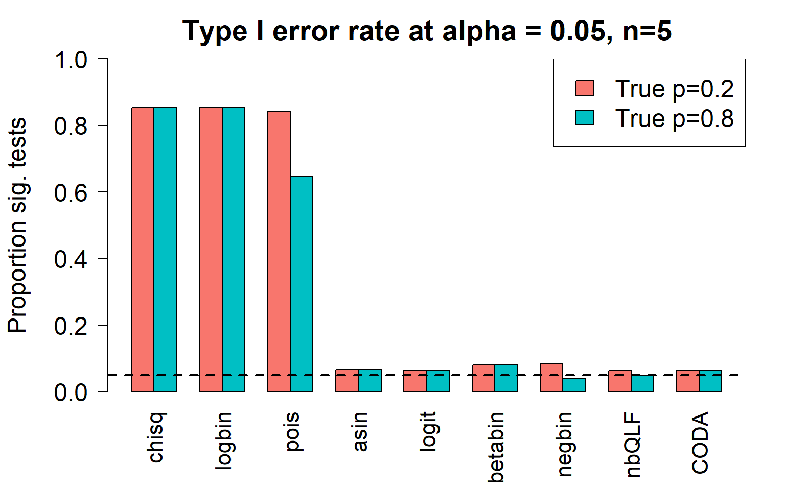
Removing the most poorly performing methods (1-3):
par(mfrow=c(1,1))
par(mar=c(5,5.5,3,2))
par(mgp=c(4,1,0))
barplot(type1error[,4:9],beside=TRUE,col=ggplotColors(length(p)),
ylab="Proportion sig. tests",
cex.axis = 1.5, cex.lab=1.5, cex.names = 1.35, ylim=c(0,0.15), las=2)
#legend("top",fill=ggplotColors(length(b)),legend=c(paste("True p=",p,sep="")), cex=1.5)
abline(h=pcut,lty=2,lwd=2)
title(c(paste("Type I error rate at alpha = 0.05, n=", nsamp/2,sep="")), cex.main=1.75)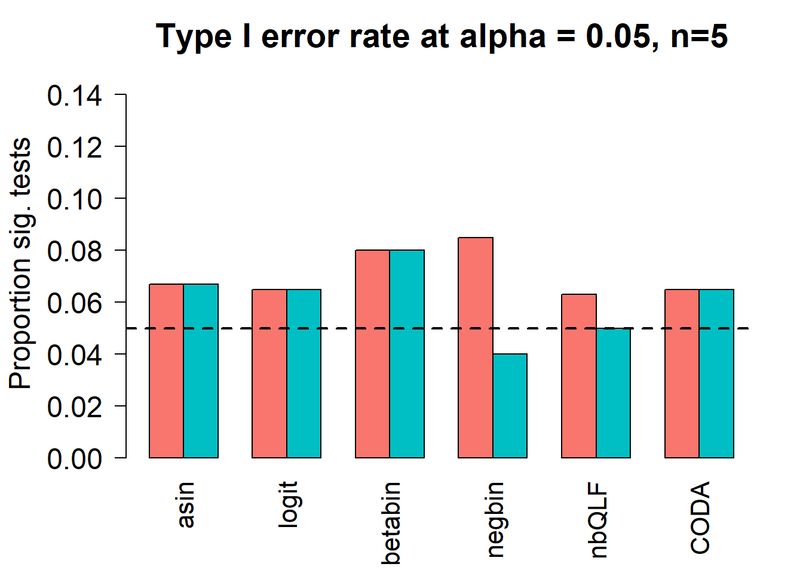
type1error2CT <- type1errorI’m going to use real data to get cell type proportions for 20 cell types. The true cell type proportions are based on the human PBMC single cell data. In this dataset, there are 27 refined cell types. I removed the 7 most rare populations to get 20 cell types. This won’t have too much effect on the cell type proportion estimates.
# Get cell type proportions from PBMC human data
# There are 27 refined cell types
pbmc <- readRDS("./data/pool_1.rds")
table(pbmc$predicted.celltype.l2)
ASDC B intermediate B memory B naive
1 570 361 871
CD14 Mono CD16 Mono CD4 CTL CD4 Naive
522 225 383 3552
CD4 TCM CD4 TEM CD8 Naive CD8 TCM
3451 389 597 205
CD8 TEM cDC2 dnT Eryth
2421 20 43 5
gdT HSPC ILC MAIT
4 18 5 189
NK NK Proliferating NK_CD56bright pDC
2582 43 134 7
Plasmablast Platelet Treg
10 27 414 length(table(pbmc$predicted.celltype.l2))[1] 27names(sort(table(pbmc$predicted.celltype.l2)/ncol(pbmc))) [1] "ASDC" "gdT" "Eryth" "ILC"
[5] "pDC" "Plasmablast" "HSPC" "cDC2"
[9] "Platelet" "dnT" "NK Proliferating" "NK_CD56bright"
[13] "MAIT" "CD8 TCM" "CD16 Mono" "B memory"
[17] "CD4 CTL" "CD4 TEM" "Treg" "CD14 Mono"
[21] "B intermediate" "CD8 Naive" "B naive" "CD8 TEM"
[25] "NK" "CD4 TCM" "CD4 Naive" # Filter out 7 most rare cell types
filter.keep <- names(sort(table(pbmc$predicted.celltype.l2)/ncol(pbmc)))[8:27]
filter.keep [1] "cDC2" "Platelet" "dnT" "NK Proliferating"
[5] "NK_CD56bright" "MAIT" "CD8 TCM" "CD16 Mono"
[9] "B memory" "CD4 CTL" "CD4 TEM" "Treg"
[13] "CD14 Mono" "B intermediate" "CD8 Naive" "B naive"
[17] "CD8 TEM" "NK" "CD4 TCM" "CD4 Naive" keep_celltypes <- pbmc$predicted.celltype.l2[pbmc$predicted.celltype.l2 %in% filter.keep]
table(keep_celltypes)keep_celltypes
B intermediate B memory B naive CD14 Mono
570 361 871 522
CD16 Mono CD4 CTL CD4 Naive CD4 TCM
225 383 3552 3451
CD4 TEM CD8 Naive CD8 TCM CD8 TEM
389 597 205 2421
cDC2 dnT MAIT NK
20 43 189 2582
NK Proliferating NK_CD56bright Platelet Treg
43 134 27 414 p <- sort(table(keep_celltypes)/length(keep_celltypes))
keep.sample <- pbmc$individual[pbmc$predicted.celltype.l2 %in% filter.keep]
pbmc.counts <- table(keep_celltypes,keep.sample)
o <- order(rowSums(pbmc.counts)/sum(pbmc.counts))
o.pbmc.counts <- pbmc.counts[o,]
table(names(p)==rownames(o.pbmc.counts))
TRUE
20 par(mfrow=c(1,1))
par(mar=c(8,5,2,2))
barplot(p,las=2, ylab="True proportion")
title("True proportions for 20 cell types from PBMC data", adj=0)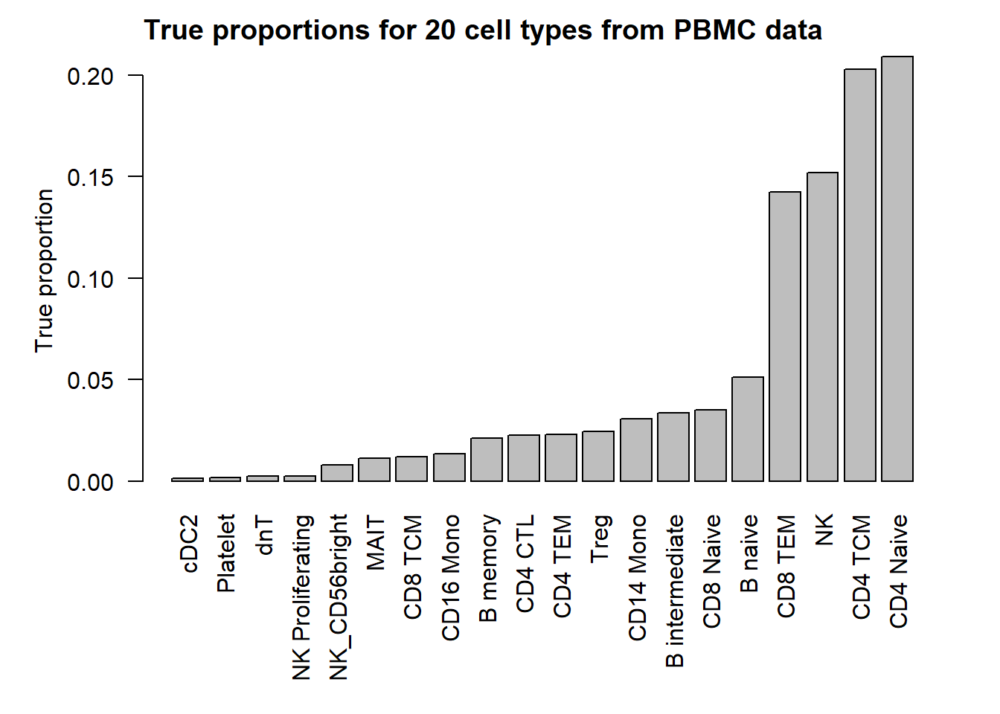
Set up remaining simulation parameters:
# Sim parameters
nsim <- 1000
depth <- 5000
# Estimate parameters for beta distribution from real data
betaparams <- estimateBetaParamsFromCounts(o.pbmc.counts)
a <- abs(betaparams$alpha)
b <- abs(betaparams$beta)
# Decide on what output to keep
pval.chsq <- pval.bb <- pval.lb <- pval.nb <- pval.qlf <- pval.pois <- pval.logit <- pval.asin <- pval.coda <- matrix(NA,nrow=length(p),ncol=nsim)nsamp <- 10
for(i in 1:nsim){
#Simulate cell type counts
counts <- SimulateCellCounts(props=p,nsamp=nsamp,depth=depth,a=a,b=b)
tot.cells <- colSums(counts)
# propeller
est.props <- t(t(counts)/tot.cells)
#asin transform
trans.prop <- asin(sqrt(est.props))
#logit transform
nc <- normCounts(counts)
est.props.logit <- t(t(nc+0.5)/(colSums(nc+0.5)))
logit.prop <- log(est.props.logit/(1-est.props.logit))
grp <- rep(c(0,1), each=nsamp/2)
des <- model.matrix(~grp)
# asinsqrt transform
fit <- lmFit(trans.prop, des)
# For two cell types, set robust = FALSE
fit <- eBayes(fit, robust=FALSE)
pval.asin[,i] <- fit$p.value[,2]
# logit transform
fit.logit <- lmFit(logit.prop, des)
fit.logit <- eBayes(fit.logit, robust=FALSE)
pval.logit[,i] <- fit.logit$p.value[,2]
# Chi-square test for differences in proportions
n <- tapply(tot.cells, grp, sum)
for(h in 1:length(p)){
pval.chsq[h,i] <- prop.test(tapply(counts[h,],grp,sum),n)$p.value
}
# Beta binomial implemented in edgeR (methylation workflow)
meth.counts <- counts
unmeth.counts <- t(tot.cells - t(counts))
new.counts <- cbind(meth.counts,unmeth.counts)
sam.info <- data.frame(Sample = rep(1:nsamp,2), Group=rep(grp,2), Meth = rep(c("me","un"), each=nsamp))
design.samples <- model.matrix(~0+factor(sam.info$Sample))
colnames(design.samples) <- paste("S",1:nsamp,sep="")
design.group <- model.matrix(~0+factor(sam.info$Group))
colnames(design.group) <- c("A","B")
design.bb <- cbind(design.samples, (sam.info$Meth=="me") * design.group)
lib.size = rep(tot.cells,2)
y <- DGEList(new.counts)
y$samples$lib.size <- lib.size
y <- estimateDisp(y, design.bb, trend="none")
fit.bb <- glmFit(y, design.bb)
contr <- makeContrasts(Grp=B-A, levels=design.bb)
lrt <- glmLRT(fit.bb, contrast=contr)
pval.bb[,i] <- lrt$table$PValue
# Logistic binomial regression
fit.lb <- glmFit(y, design.bb, dispersion = 0)
lrt.lb <- glmLRT(fit.lb, contrast=contr)
pval.lb[,i] <- lrt.lb$table$PValue
# Negative binomial
y.nb <- DGEList(counts)
y.nb <- estimateDisp(y.nb, des, trend="none")
fit.nb <- glmFit(y.nb, des)
lrt.nb <- glmLRT(fit.nb, coef=2)
pval.nb[,i] <- lrt.nb$table$PValue
# Negative binomial QLF test
fit.qlf <- glmQLFit(y.nb, des, robust=FALSE, abundance.trend = FALSE)
res.qlf <- glmQLFTest(fit.qlf, coef=2)
pval.qlf[,i] <- res.qlf$table$PValue
# Poisson
fit.poi <- glmFit(y.nb, des, dispersion = 0)
lrt.poi <- glmLRT(fit.poi, coef=2)
pval.pois[,i] <- lrt.poi$table$PValue
# CODA
# Replace zero counts with 0.5 so that the geometric mean always works
if(any(counts==0)) counts[counts==0] <- 0.5
geomean <- apply(counts,2, function(x) exp(mean(log(x))))
geomean.mat <- expandAsMatrix(geomean,dim=c(nrow(counts),ncol(counts)),byrow = FALSE)
clr <- counts/geomean.mat
logratio <- log(clr)
fit.coda <- lmFit(logratio, des)
fit.coda <- eBayes(fit.coda, robust=FALSE)
pval.coda[,i] <- fit.coda$p.value[,2]
}pcut <- 0.05
type1error <- matrix(NA,nrow=length(p),ncol=9)
rownames(type1error) <- rownames(counts)
colnames(type1error) <- c("chisq","logbin","pois","asin", "logit","betabin","negbin","nbQLF","CODA")
type1error[,1]<-rowSums(pval.chsq<pcut)/nsim
type1error[,2]<-rowSums(pval.lb<pcut)/nsim
type1error[,3]<-rowSums(pval.pois<pcut)/nsim
type1error[,4]<-rowSums(pval.asin<pcut)/nsim
type1error[,5]<-rowSums(pval.logit<pcut)/nsim
type1error[,6]<-rowSums(pval.bb<pcut)/nsim
type1error[,7]<-rowSums(pval.nb<pcut)/nsim
type1error[,8]<-rowSums(pval.qlf<pcut)/nsim
type1error[,9]<-rowSums(pval.coda<pcut)/nsim gt(data.frame(type1error), rownames_to_stub = TRUE,caption="Type I error: 20 cell types")| chisq | logbin | pois | asin | logit | betabin | negbin | nbQLF | CODA | |
|---|---|---|---|---|---|---|---|---|---|
| c0 | 0.240 | 0.283 | 0.283 | 0.004 | 0.049 | 0.032 | 0.042 | 0.048 | 0.052 |
| c1 | 0.269 | 0.306 | 0.306 | 0.008 | 0.062 | 0.039 | 0.045 | 0.046 | 0.058 |
| c2 | 0.307 | 0.319 | 0.319 | 0.004 | 0.034 | 0.020 | 0.026 | 0.031 | 0.051 |
| c3 | 0.307 | 0.323 | 0.323 | 0.011 | 0.044 | 0.029 | 0.038 | 0.045 | 0.035 |
| c4 | 0.597 | 0.609 | 0.607 | 0.040 | 0.048 | 0.052 | 0.049 | 0.045 | 0.043 |
| c5 | 0.766 | 0.774 | 0.772 | 0.056 | 0.078 | 0.102 | 0.103 | 0.079 | 0.076 |
| c6 | 0.643 | 0.647 | 0.647 | 0.048 | 0.038 | 0.037 | 0.035 | 0.037 | 0.029 |
| c7 | 0.702 | 0.710 | 0.708 | 0.048 | 0.049 | 0.054 | 0.060 | 0.049 | 0.052 |
| c8 | 0.737 | 0.746 | 0.739 | 0.065 | 0.047 | 0.048 | 0.057 | 0.052 | 0.046 |
| c9 | 0.898 | 0.900 | 0.899 | 0.069 | 0.111 | 0.157 | 0.149 | 0.111 | 0.105 |
| c10 | 0.680 | 0.687 | 0.680 | 0.051 | 0.024 | 0.022 | 0.022 | 0.025 | 0.029 |
| c11 | 0.584 | 0.590 | 0.585 | 0.045 | 0.011 | 0.010 | 0.010 | 0.009 | 0.011 |
| c12 | 0.789 | 0.793 | 0.789 | 0.062 | 0.055 | 0.063 | 0.055 | 0.049 | 0.050 |
| c13 | 0.867 | 0.868 | 0.867 | 0.087 | 0.087 | 0.105 | 0.095 | 0.064 | 0.087 |
| c14 | 0.820 | 0.820 | 0.820 | 0.067 | 0.064 | 0.070 | 0.076 | 0.063 | 0.056 |
| c15 | 0.802 | 0.804 | 0.801 | 0.054 | 0.034 | 0.034 | 0.034 | 0.035 | 0.039 |
| c16 | 0.907 | 0.907 | 0.899 | 0.089 | 0.081 | 0.091 | 0.063 | 0.055 | 0.075 |
| c17 | 0.917 | 0.918 | 0.911 | 0.074 | 0.051 | 0.063 | 0.040 | 0.033 | 0.057 |
| c18 | 0.845 | 0.846 | 0.823 | 0.057 | 0.013 | 0.013 | 0.007 | 0.007 | 0.011 |
| c19 | 0.905 | 0.906 | 0.885 | 0.071 | 0.034 | 0.039 | 0.019 | 0.018 | 0.033 |
Plot of all type I error rates for the 5 cell types:
layout(matrix(c(1,1,1,2), 1, 4, byrow = TRUE))
par(mar=c(5,5.5,3,2))
par(mgp=c(4,1,0))
barplot(type1error,beside=TRUE,col=ggplotColors(length(p)),
ylab="Proportion sig. tests",
cex.axis = 1.5, cex.lab=1.5, cex.names = 1.35, ylim=c(0,1), las=2)
abline(h=pcut,lty=2,lwd=2)
title(c(paste("Type I error rate at alpha = 0.05, n=", nsamp/2,sep="")), cex.main=1.75,adj=0)
par(mar=c(0,0,0,0))
plot(1, type = "n", xlab = "", ylab = "", xaxt="n",yaxt="n", bty="n")
legend("center",fill=ggplotColors(length(p)),legend=c(paste("True p=",round(p,4),sep="")), cex=1.5)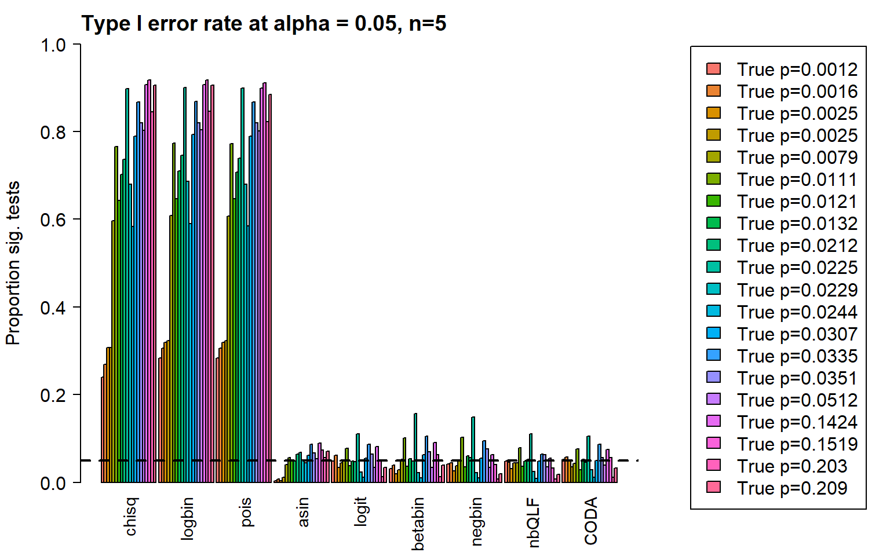
Removing the most poorly performing methods (1-3):
layout(matrix(c(1,1,1,2), 1, 4, byrow = TRUE))
par(mar=c(5,5.5,3,2))
par(mgp=c(4,1,0))
barplot(type1error[,4:9],beside=TRUE,col=ggplotColors(length(p)),
ylab="Proportion sig. tests",
cex.axis = 1.5, cex.lab=1.5, cex.names = 1.35, ylim=c(0,0.18), las=2)
abline(h=pcut,lty=2,lwd=2)
title(c(paste("Type I error rate at alpha = 0.05, n=", nsamp/2,sep="")), cex.main=1.75,adj=0)
par(mar=c(0,0,0,0))
plot(1, type = "n", xlab = "", ylab = "", xaxt="n",yaxt="n", bty="n")
legend("center",fill=ggplotColors(length(p)),legend=c(paste("True p=",round(p,4),sep="")), cex=1.5)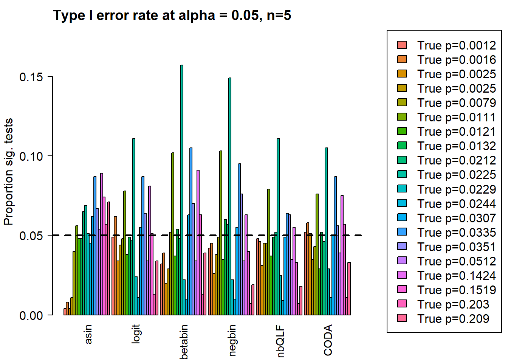
type1error20CT <- type1errorThe two cell types case is fairly special. If one cell type changes then naturally the second cell type also changes.
# Sim parameters
nsim <- 1000
depth <- 5000
grp1.trueprops <- c(0.4,0.6)
grp2.trueprops <- c(0.2,0.8)
trueprops <- (grp1.trueprops+grp2.trueprops)/length(grp1.trueprops)
da.fac <- grp2.trueprops/grp1.trueprops
names(grp1.trueprops) <-names(grp1.trueprops) <- c("C0","C1")
da.fac[1] 0.500000 1.333333# Decide on what output to keep
pval.chsq <- pval.bb <- pval.lb <- pval.nb <- pval.qlf <- pval.pois <- pval.logit <- pval.asin <- pval.coda <- matrix(NA,nrow=length(grp1.trueprops),ncol=nsim)par(mar=c(5,5,2,2))
par(mfrow=c(1,1))
barplot(t(cbind(grp1.trueprops,grp2.trueprops)), beside=TRUE, col=c(2,4),
ylab="True cell type proportion")
legend("topleft", fill=c(2,4),legend=c("Group 1","Group 2"))
title("True cell type proportions for Group 1 and 2",adj=0)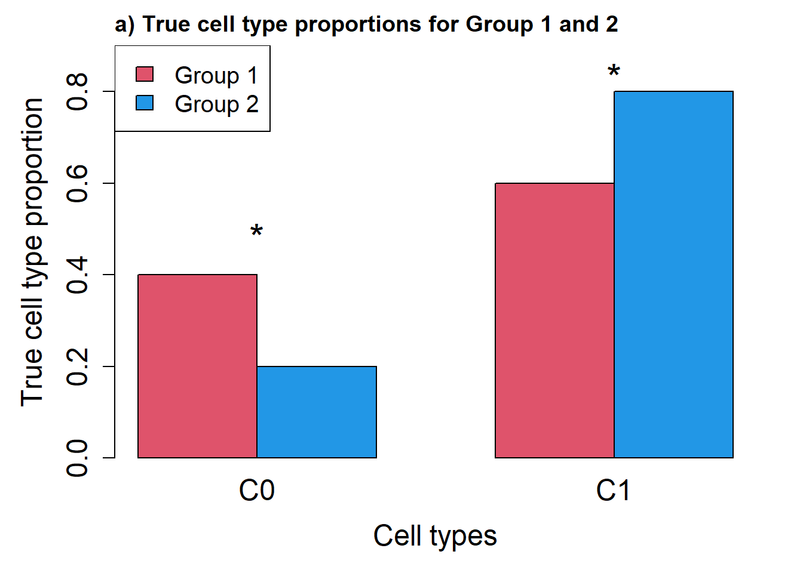
# Get hyperparameters for alpha and beta
# Note group 1 and group 2 have different b parameters to accommodate true
# differences in cell type proportions
a <- c(10,10)
b.grp1 <- a*(1-grp1.trueprops)/grp1.trueprops
b.grp2 <- a*(1-grp2.trueprops)/grp2.truepropsNext we simulate the cell type counts and run the various statistical models for testing cell type proportion differences between the two groups. We expect to see significant differences in both cell types however cell type C0 has a larger fold change (2) compared to cell type C1, which only increases by 33%.
nsamp <- 10
for(i in 1:nsim){
#Simulate cell type counts
counts <- SimulateCellCountsTrueDiff(props=trueprops,nsamp=nsamp,depth=depth,a=a,
b.grp1=b.grp1,b.grp2=b.grp2)
tot.cells <- colSums(counts)
# propeller
est.props <- t(t(counts)/tot.cells)
#asin transform
trans.prop <- asin(sqrt(est.props))
#logit transform
nc <- normCounts(counts)
est.props.logit <- t(t(nc+0.5)/(colSums(nc+0.5)))
logit.prop <- log(est.props.logit/(1-est.props.logit))
grp <- rep(c(0,1), each=nsamp/2)
des <- model.matrix(~grp)
# asinsqrt transform
fit <- lmFit(trans.prop, des)
fit <- eBayes(fit, robust=FALSE)
pval.asin[,i] <- fit$p.value[,2]
# logit transform
fit.logit <- lmFit(logit.prop, des)
fit.logit <- eBayes(fit.logit, robust=FALSE)
pval.logit[,i] <- fit.logit$p.value[,2]
# Chi-square test for differences in proportions
n <- tapply(tot.cells, grp, sum)
for(h in 1:nrow(counts)){
pval.chsq[h,i] <- prop.test(tapply(counts[h,],grp,sum),n)$p.value
}
# Beta binomial implemented in edgeR (methylation workflow)
meth.counts <- counts
unmeth.counts <- t(tot.cells - t(counts))
new.counts <- cbind(meth.counts,unmeth.counts)
sam.info <- data.frame(Sample = rep(1:nsamp,2), Group=rep(grp,2), Meth = rep(c("me","un"), each=nsamp))
design.samples <- model.matrix(~0+factor(sam.info$Sample))
colnames(design.samples) <- paste("S",1:nsamp,sep="")
design.group <- model.matrix(~0+factor(sam.info$Group))
colnames(design.group) <- c("A","B")
design.bb <- cbind(design.samples, (sam.info$Meth=="me") * design.group)
lib.size = rep(tot.cells,2)
y <- DGEList(new.counts)
y$samples$lib.size <- lib.size
y <- estimateDisp(y, design.bb, trend="none")
fit.bb <- glmFit(y, design.bb)
contr <- makeContrasts(Grp=B-A, levels=design.bb)
lrt <- glmLRT(fit.bb, contrast=contr)
pval.bb[,i] <- lrt$table$PValue
# Logistic binomial regression
fit.lb <- glmFit(y, design.bb, dispersion = 0)
lrt.lb <- glmLRT(fit.lb, contrast=contr)
pval.lb[,i] <- lrt.lb$table$PValue
# Negative binomial
y.nb <- DGEList(counts)
y.nb <- estimateDisp(y.nb, des, trend="none")
fit.nb <- glmFit(y.nb, des)
lrt.nb <- glmLRT(fit.nb, coef=2)
pval.nb[,i] <- lrt.nb$table$PValue
# Negative binomial QLF test
fit.qlf <- glmQLFit(y.nb, des, robust=FALSE, abundance.trend = FALSE)
res.qlf <- glmQLFTest(fit.qlf, coef=2)
pval.qlf[,i] <- res.qlf$table$PValue
# Poisson
fit.poi <- glmFit(y.nb, des, dispersion = 0)
lrt.poi <- glmLRT(fit.poi, coef=2)
pval.pois[,i] <- lrt.poi$table$PValue
# CODA
# Replace zero counts with 0.5 so that the geometric mean always works
if(any(counts==0)) counts[counts==0] <- 0.5
geomean <- apply(counts,2, function(x) exp(mean(log(x))))
geomean.mat <- expandAsMatrix(geomean,dim=c(nrow(counts),ncol(counts)),byrow = FALSE)
clr <- counts/geomean.mat
logratio <- log(clr)
fit.coda <- lmFit(logratio, des)
fit.coda <- eBayes(fit.coda, robust=FALSE)
pval.coda[,i] <- fit.coda$p.value[,2]
}We can look at the number of significant tests at certain p-value cut-offs:
pcut <- 0.05
de <- da.fac != 1
sig.disc <- matrix(NA,nrow=length(trueprops),ncol=9)
rownames(sig.disc) <- c("C0","C1")
colnames(sig.disc) <- c("chisq","logbin","pois","asin", "logit","betabin","negbin","nbQLF","CODA")
sig.disc[,1]<-rowSums(pval.chsq<pcut)/nsim
sig.disc[,2]<-rowSums(pval.lb<pcut)/nsim
sig.disc[,3]<-rowSums(pval.pois<pcut)/nsim
sig.disc[,4]<-rowSums(pval.asin<pcut)/nsim
sig.disc[,5]<-rowSums(pval.logit<pcut)/nsim
sig.disc[,6]<-rowSums(pval.bb<pcut)/nsim
sig.disc[,7]<-rowSums(pval.nb<pcut)/nsim
sig.disc[,8]<-rowSums(pval.qlf<pcut)/nsim
sig.disc[,9]<-rowSums(pval.coda<pcut)/nsim gt(data.frame(sig.disc),rownames_to_stub = TRUE,caption="Proportion of significant tests: 2 cell types")| chisq | logbin | pois | asin | logit | betabin | negbin | nbQLF | CODA | |
|---|---|---|---|---|---|---|---|---|---|
| C0 | 1 | 1 | 1 | 0.993 | 0.993 | 0.995 | 0.998 | 0.996 | 0.993 |
| C1 | 1 | 1 | 1 | 0.993 | 0.993 | 0.995 | 0.972 | 0.969 | 0.993 |
layout(matrix(c(1,1,1,2), 1, 4, byrow = TRUE))
par(mar=c(9,5,3,2))
par(mgp=c(3, 0.5, 0))
o <- order(trueprops)
names <- c("propeller (asin)","propeller (logit)","betabin","negbin","negbinQLF","CODA")
barplot(sig.disc[o,4:9],beside=TRUE,col=ggplotColors(length(b.grp1)),
ylab="Proportion sig. tests", names=names,
cex.axis = 1.5, cex.lab=1.5, cex.names = 1.35, ylim=c(0,1), las=2)
title(paste("Significant tests, n=",nsamp/2,sep=""), cex.main=1.5,adj=0)
abline(h=pcut,lty=2,lwd=2)
par(mar=c(0,0,0,0))
plot(1, type = "n", xlab = "", ylab = "", xaxt="n",yaxt="n", bty="n")
legend("center", legend=paste("True p =",round(trueprops,3)[o]), fill=ggplotColors(length(b.grp1)), cex=1.5)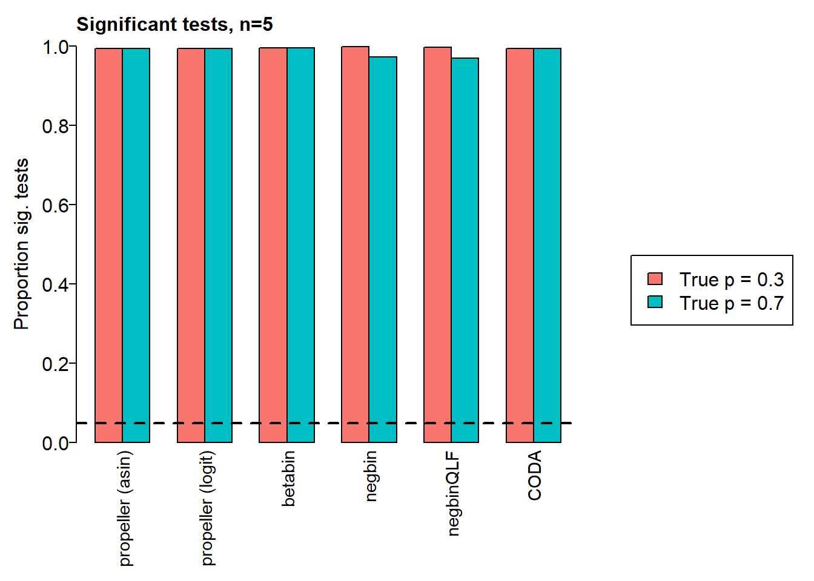
trueprops <- sort(table(keep_celltypes)/length(keep_celltypes))# Sim parameters
nsim <- 1000
depth <- 5000
# Estimate parameters for beta distribution from real data
betaparams <- estimateBetaParamsFromCounts(o.pbmc.counts)
a <- abs(betaparams$alpha)
b <- abs(betaparams$beta)
# Decide on what output to keep
pval.chsq <- pval.bb <- pval.lb <- pval.nb <- pval.qlf <- pval.pois <- pval.logit <- pval.asin <- pval.coda <- matrix(NA,nrow=length(p),ncol=nsim)Set up true proportions for the two groups:
barplot(trueprops,las=2)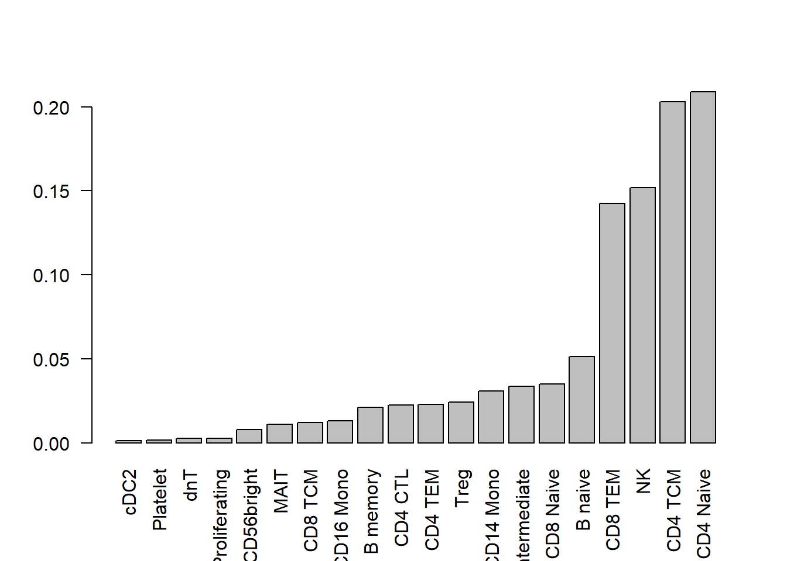
# Randomly sample eight cell types to change between two groups
diffct <- c("cDC2","NK Proliferating","MAIT","B memory","CD14 Mono","B naive",
"NK","CD4 Naive")
da.fac <- rep(1,length(trueprops))
names(da.fac) <- names(trueprops)
da.fac[diffct] <- rep(c(1/3,1.5),4)
grp1.trueprops <- grp2.trueprops <- trueprops
grp2.trueprops <- grp1.trueprops*da.fac
sum(grp2.trueprops)[1] 1.01205# Adjust proportions in group2 to add to 1
grp2.trueprops["CD4 Naive"] <- grp2.trueprops["CD4 Naive"] - (sum(grp2.trueprops)-1)
sum(grp1.trueprops)[1] 1sum(grp2.trueprops)[1] 1par(mar=c(9,5,2,2))
barplot(t(cbind(grp1.trueprops,grp2.trueprops)), beside=TRUE, col=c(2,4),
las=2, ylab="True cell type proportion",ylim=c(0,0.32))
legend("top", fill=c(2,4),legend=c("Group 1","Group 2"))
title("True cell type proportions for Group 1 and 2",adj=0)
text(2,0.02,label="*", cex=2)
text(11,0.02,label="*", cex=2)
text(17,0.03,label="*", cex=2)
text(26,0.05,label="*", cex=2)
text(38,0.06,label="*", cex=2)
text(38,0.06,label="*", cex=2)
text(47,0.1,label="*", cex=2)
text(53,0.18,label="*", cex=2)
text(59,0.31,label="*", cex=2)
legend("topleft",legend="* = true difference",cex=1.5)# Get hyperparameters for alpha and beta
# Note group 1 and group 2 have different b parameters to accommodate true
# differences in cell type proportions
a <- 10
b.grp1 <- a*(1-grp1.trueprops)/grp1.trueprops
b.grp2 <- a*(1-grp2.trueprops)/grp2.truepropsNext we simulate the cell type counts and run the various statistical models for testing cell type proportion differences between the two groups. We expect to see significant differences in cell type proportions in 8/20 cell types, and no significant differences in the remaining cell types between group 1 and group 2.
nsamp <- 10
for(i in 1:nsim){
#Simulate cell type counts
counts <- SimulateCellCountsTrueDiff(props=trueprops,nsamp=nsamp,depth=depth,a=rep(a,length(trueprops)),
b.grp1=b.grp1,b.grp2=b.grp2)
tot.cells <- colSums(counts)
# propeller
est.props <- t(t(counts)/tot.cells)
#asin transform
trans.prop <- asin(sqrt(est.props))
#logit transform
nc <- normCounts(counts)
est.props.logit <- t(t(nc+0.5)/(colSums(nc+0.5)))
logit.prop <- log(est.props.logit/(1-est.props.logit))
grp <- rep(c(0,1), each=nsamp/2)
des <- model.matrix(~grp)
# asinsqrt transform
fit <- lmFit(trans.prop, des)
fit <- eBayes(fit, robust=TRUE)
pval.asin[,i] <- fit$p.value[,2]
# logit transform
fit.logit <- lmFit(logit.prop, des)
fit.logit <- eBayes(fit.logit, robust=TRUE)
pval.logit[,i] <- fit.logit$p.value[,2]
# Chi-square test for differences in proportions
n <- tapply(tot.cells, grp, sum)
for(h in 1:nrow(counts)){
pval.chsq[h,i] <- prop.test(tapply(counts[h,],grp,sum),n)$p.value
}
# Beta binomial implemented in edgeR (methylation workflow)
meth.counts <- counts
unmeth.counts <- t(tot.cells - t(counts))
new.counts <- cbind(meth.counts,unmeth.counts)
sam.info <- data.frame(Sample = rep(1:nsamp,2), Group=rep(grp,2), Meth = rep(c("me","un"), each=nsamp))
design.samples <- model.matrix(~0+factor(sam.info$Sample))
colnames(design.samples) <- paste("S",1:nsamp,sep="")
design.group <- model.matrix(~0+factor(sam.info$Group))
colnames(design.group) <- c("A","B")
design.bb <- cbind(design.samples, (sam.info$Meth=="me") * design.group)
lib.size = rep(tot.cells,2)
y <- DGEList(new.counts)
y$samples$lib.size <- lib.size
y <- estimateDisp(y, design.bb, trend="none")
fit.bb <- glmFit(y, design.bb)
contr <- makeContrasts(Grp=B-A, levels=design.bb)
lrt <- glmLRT(fit.bb, contrast=contr)
pval.bb[,i] <- lrt$table$PValue
# Logistic binomial regression
fit.lb <- glmFit(y, design.bb, dispersion = 0)
lrt.lb <- glmLRT(fit.lb, contrast=contr)
pval.lb[,i] <- lrt.lb$table$PValue
# Negative binomial
y.nb <- DGEList(counts)
y.nb <- estimateDisp(y.nb, des, trend="none")
fit.nb <- glmFit(y.nb, des)
lrt.nb <- glmLRT(fit.nb, coef=2)
pval.nb[,i] <- lrt.nb$table$PValue
# Negative binomial QLF test
fit.qlf <- glmQLFit(y.nb, des, robust=TRUE, abundance.trend = FALSE)
res.qlf <- glmQLFTest(fit.qlf, coef=2)
pval.qlf[,i] <- res.qlf$table$PValue
# Poisson
fit.poi <- glmFit(y.nb, des, dispersion = 0)
lrt.poi <- glmLRT(fit.poi, coef=2)
pval.pois[,i] <- lrt.poi$table$PValue
# CODA
# Replace zero counts with 0.5 so that the geometric mean always works
if(any(counts==0)) counts[counts==0] <- 0.5
geomean <- apply(counts,2, function(x) exp(mean(log(x))))
geomean.mat <- expandAsMatrix(geomean,dim=c(nrow(counts),ncol(counts)),byrow = FALSE)
clr <- counts/geomean.mat
logratio <- log(clr)
fit.coda <- lmFit(logratio, des)
fit.coda <- eBayes(fit.coda, robust=TRUE)
pval.coda[,i] <- fit.coda$p.value[,2]
}We can look at the number of significant tests at certain p-value cut-offs:
pcut <- 0.05
de <- da.fac != 1
sig.disc <- matrix(NA,nrow=length(trueprops),ncol=9)
rownames(sig.disc) <- names(trueprops)
colnames(sig.disc) <- c("chisq","logbin","pois","asin", "logit","betabin","negbin","nbQLF","CODA")
sig.disc[,1]<-rowSums(pval.chsq<pcut)/nsim
sig.disc[,2]<-rowSums(pval.lb<pcut)/nsim
sig.disc[,3]<-rowSums(pval.pois<pcut)/nsim
sig.disc[,4]<-rowSums(pval.asin<pcut)/nsim
sig.disc[,5]<-rowSums(pval.logit<pcut)/nsim
sig.disc[,6]<-rowSums(pval.bb<pcut)/nsim
sig.disc[,7]<-rowSums(pval.nb<pcut)/nsim
sig.disc[,8]<-rowSums(pval.qlf<pcut)/nsim
sig.disc[,9]<-rowSums(pval.coda<pcut)/nsim o <- order(trueprops)
gt(data.frame(sig.disc[o,]),rownames_to_stub = TRUE,caption="Proportion of significant tests: 20 cell types")| chisq | logbin | pois | asin | logit | betabin | negbin | nbQLF | CODA | |
|---|---|---|---|---|---|---|---|---|---|
| cDC2 | 0.812 | 0.840 | 0.840 | 0.371 | 0.739 | 0.756 | 0.784 | 0.744 | 0.697 |
| Platelet | 0.147 | 0.169 | 0.169 | 0.011 | 0.096 | 0.056 | 0.063 | 0.055 | 0.146 |
| dnT | 0.186 | 0.208 | 0.206 | 0.017 | 0.074 | 0.043 | 0.055 | 0.044 | 0.111 |
| NK Proliferating | 0.625 | 0.649 | 0.648 | 0.176 | 0.364 | 0.335 | 0.370 | 0.334 | 0.591 |
| NK_CD56bright | 0.370 | 0.385 | 0.383 | 0.031 | 0.053 | 0.053 | 0.071 | 0.062 | 0.109 |
| MAIT | 0.999 | 0.999 | 0.999 | 0.977 | 0.990 | 0.991 | 0.992 | 0.992 | 0.984 |
| CD8 TCM | 0.476 | 0.487 | 0.484 | 0.046 | 0.046 | 0.057 | 0.071 | 0.059 | 0.083 |
| CD16 Mono | 0.473 | 0.478 | 0.475 | 0.055 | 0.055 | 0.063 | 0.078 | 0.067 | 0.091 |
| B memory | 0.936 | 0.939 | 0.936 | 0.455 | 0.421 | 0.502 | 0.518 | 0.502 | 0.711 |
| CD4 CTL | 0.601 | 0.609 | 0.602 | 0.052 | 0.035 | 0.051 | 0.061 | 0.049 | 0.085 |
| CD4 TEM | 0.588 | 0.598 | 0.594 | 0.054 | 0.039 | 0.055 | 0.064 | 0.050 | 0.088 |
| Treg | 0.596 | 0.606 | 0.599 | 0.058 | 0.034 | 0.057 | 0.070 | 0.057 | 0.070 |
| CD14 Mono | 1.000 | 1.000 | 1.000 | 0.991 | 0.995 | 0.996 | 0.997 | 0.997 | 0.985 |
| B intermediate | 0.627 | 0.632 | 0.625 | 0.065 | 0.039 | 0.059 | 0.065 | 0.060 | 0.081 |
| CD8 Naive | 0.640 | 0.645 | 0.639 | 0.065 | 0.039 | 0.055 | 0.066 | 0.054 | 0.090 |
| B naive | 0.953 | 0.953 | 0.953 | 0.516 | 0.464 | 0.529 | 0.534 | 0.506 | 0.716 |
| CD8 TEM | 0.797 | 0.801 | 0.782 | 0.096 | 0.044 | 0.066 | 0.047 | 0.042 | 0.092 |
| NK | 1.000 | 1.000 | 1.000 | 1.000 | 1.000 | 1.000 | 1.000 | 1.000 | 0.991 |
| CD4 TCM | 0.809 | 0.809 | 0.794 | 0.055 | 0.023 | 0.040 | 0.029 | 0.017 | 0.048 |
| CD4 Naive | 0.999 | 0.999 | 0.997 | 0.719 | 0.583 | 0.692 | 0.526 | 0.453 | 0.683 |
foldchange <- grp2.trueprops/grp1.trueprops
o <- order(abs(log(foldchange)))
pheatmap(sig.disc[o,4:9], scale="none", cluster_rows = FALSE, cluster_cols = FALSE, main = "Proportion of significant tests, ordered by fold-change")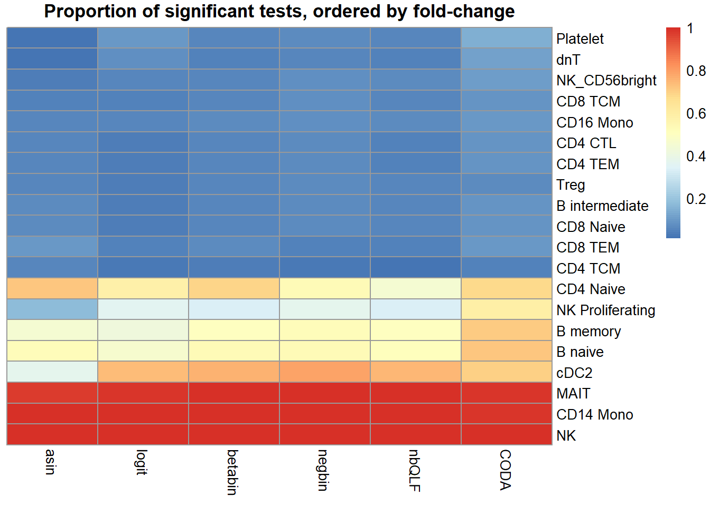
Within a simulation we can calculate the numbers of true positives etc.
tp <- fp <- sig <- tn <- matrix(NA,nrow=9,ncol=nsim)
rownames(tp) <- c("chisq","logbin","pois","asin", "logit","betabin","negbin","nbQLF","CODA")
tp[1,]<-colSums(pval.chsq[de,]<pcut)
tp[2,]<-colSums(pval.lb[de,]<pcut)
tp[3,]<-colSums(pval.pois[de,]<pcut)
tp[4,]<-colSums(pval.asin[de,]<pcut)
tp[5,]<-colSums(pval.logit[de,]<pcut)
tp[6,]<-colSums(pval.bb[de,]<pcut)
tp[7,]<-colSums(pval.nb[de,]<pcut)
tp[8,]<-colSums(pval.qlf[de,]<pcut)
tp[9,]<-colSums(pval.coda[de,]<pcut)
sig[1,]<-colSums(pval.chsq<pcut)
sig[2,]<-colSums(pval.lb<pcut)
sig[3,]<-colSums(pval.pois<pcut)
sig[4,]<-colSums(pval.asin<pcut)
sig[5,]<-colSums(pval.logit<pcut)
sig[6,]<-colSums(pval.bb<pcut)
sig[7,]<-colSums(pval.nb<pcut)
sig[8,]<-colSums(pval.qlf<pcut)
sig[9,]<-colSums(pval.coda<pcut)
recall <- tp/8
precision <- tp/sig
f1 <- 2*(recall*precision)/(recall + precision)
rowMeans(recall) chisq logbin pois asin logit betabin negbin nbQLF
0.915500 0.922375 0.921625 0.650625 0.694500 0.725125 0.715125 0.691000
CODA
0.794750 rowMeans(precision) chisq logbin pois asin logit betabin negbin nbQLF
0.5442174 0.5412529 0.5443047 0.9077964 0.9170337 0.9097524 0.8977022 0.9109782
CODA
0.8649798 rowMeans(f1) chisq logbin pois asin logit betabin negbin nbQLF
0.6796567 0.6793506 0.6814316 0.7493063 0.7812391 0.7984140 0.7869849 0.7766171
CODA
0.8193951 res <- data.frame(Recall = rowMeans(recall), Precision = rowMeans(precision),
F1score = rowMeans(f1))
rownames(res) <- rownames(recall)
gt(res,rownames_to_stub=TRUE,caption="True differences in 8/20 cell types")| Recall | Precision | F1score | |
|---|---|---|---|
| chisq | 0.915500 | 0.5442174 | 0.6796567 |
| logbin | 0.922375 | 0.5412529 | 0.6793506 |
| pois | 0.921625 | 0.5443047 | 0.6814316 |
| asin | 0.650625 | 0.9077964 | 0.7493063 |
| logit | 0.694500 | 0.9170337 | 0.7812391 |
| betabin | 0.725125 | 0.9097524 | 0.7984140 |
| negbin | 0.715125 | 0.8977022 | 0.7869849 |
| nbQLF | 0.691000 | 0.9109782 | 0.7766171 |
| CODA | 0.794750 | 0.8649798 | 0.8193951 |
layout(matrix(c(1,1,1,2), 1, 4, byrow = TRUE))
par(mar=c(9,5,3,2))
par(mgp=c(3, 0.5, 0))
o <- order(trueprops)
names <- c("propeller (asin)","propeller (logit)","betabin","negbin","negbinQLF","CODA")
barplot(sig.disc[o,4:9],beside=TRUE,col=ggplotColors(length(trueprops)),
ylab="Proportion sig. tests", names=names,
cex.axis = 1.5, cex.lab=1.5, cex.names = 1.35, ylim=c(0,1), las=2)
title(paste("Significant tests, n=",nsamp/2,sep=""), cex.main=1.5)
abline(h=pcut,lty=2,lwd=2)
par(mar=c(0,0,0,0))
plot(1, type = "n", xlab = "", ylab = "", xaxt="n",yaxt="n", bty="n")
legend("center", legend=paste("True p =",round(trueprops,3)[o]), fill=ggplotColors(length(trueprops)), cex=1.5)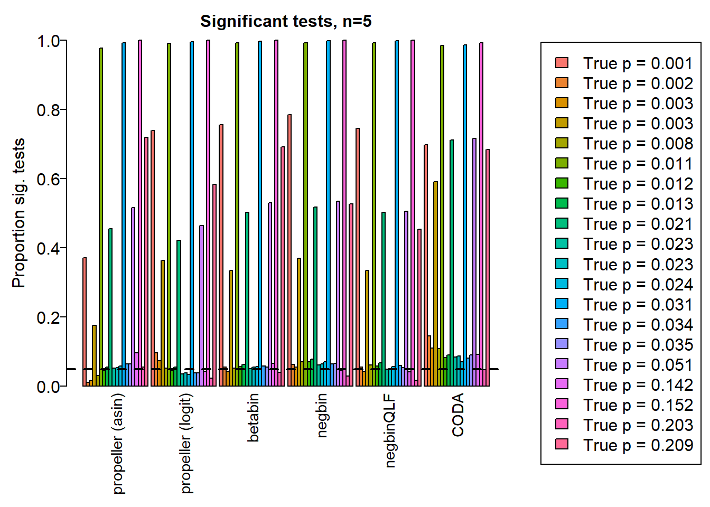
auc.asin <- auc.logit <- auc.bb <- auc.nb <- auc.qlf <- auc.coda <- rep(NA,nsim)
for(i in 1:nsim){
auc.asin[i] <- auroc(score=1-pval.asin[,i],bool=de)
auc.logit[i] <- auroc(score=1-pval.logit[,i],bool=de)
auc.bb[i] <- auroc(score=1-pval.bb[,i],bool=de)
auc.nb[i] <- auroc(score=1-pval.nb[,i],bool=de)
auc.qlf[i] <- auroc(score=1-pval.qlf[,i],bool=de)
auc.coda[i] <- auroc(score=1-pval.coda[,i],bool=de)
}
mean(auc.asin)[1] 0.8993229mean(auc.logit)[1] 0.9117812mean(auc.bb)[1] 0.9164062mean(auc.nb)[1] 0.9135833mean(auc.qlf)[1] 0.91275mean(auc.coda)[1] 0.9297188par(mfrow=c(1,1))
par(mar=c(9,5,3,2))
barplot(c(mean(auc.asin),mean(auc.logit),mean(auc.bb),mean(auc.nb),mean(auc.qlf),mean(auc.coda)), ylim=c(0,1), ylab= "AUC", cex.axis=1.5, cex.lab=1.5, names=names, las=2, cex.names = 1.5)
title(paste("AUC: sample size n=",nsamp/2,sep=""),cex.main=1.5,adj=0)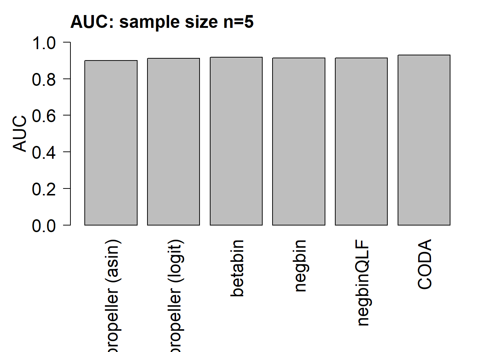
true positive vs false positive rate
tp.rate.asin <- fp.rate.asin <- tp.rate.logit <- fp.rate.logit <-
tp.rate.bb <- fp.rate.bb <- tp.rate.nb <- fp.rate.nb <-
tp.rate.qlf <- fp.rate.qlf <- tp.rate.coda <- fp.rate.coda <- matrix(NA,nrow=20,ncol=nsim)
for(i in 1:nsim){
o <- order(pval.asin[,i])
tp.rate.asin[,i] <- cumsum(de[o])
fp.rate.asin[,i] <- cumsum(1-de[o])
o <- order(pval.logit[,i])
tp.rate.logit[,i] <- cumsum(de[o])
fp.rate.logit[,i] <- cumsum(1-de[o])
o <- order(pval.bb[,i])
tp.rate.bb[,i] <- cumsum(de[o])
fp.rate.bb[,i] <- cumsum(1-de[o])
o <- order(pval.nb[,i])
tp.rate.nb[,i] <- cumsum(de[o])
fp.rate.nb[,i] <- cumsum(1-de[o])
o <- order(pval.qlf[,i])
tp.rate.qlf[,i] <- cumsum(de[o])
fp.rate.qlf[,i] <- cumsum(1-de[o])
o <- order(pval.coda[,i])
tp.rate.coda[,i] <- cumsum(de[o])
fp.rate.coda[,i] <- cumsum(1-de[o])
}mycols <- c(1,2,4,3,"orange",8)
plot(rowMeans(fp.rate.asin)/12,rowMeans(tp.rate.asin)/8,col=mycols[1], type="l",lwd=2,
ylab="True positive rate", xlab="False positive rate")
lines(rowMeans(fp.rate.bb)/12,rowMeans(tp.rate.bb)/8,lwd=2,col=mycols[3])
lines(rowMeans(fp.rate.nb)/12,rowMeans(tp.rate.nb)/8,lwd=2,col=mycols[4])
lines(rowMeans(fp.rate.qlf)/12,rowMeans(tp.rate.nb)/8,lwd=2,col=mycols[5])
lines(rowMeans(fp.rate.coda)/12,rowMeans(tp.rate.nb)/8,lwd=2,col=mycols[6])
lines(rowMeans(fp.rate.logit)/12,rowMeans(tp.rate.logit)/8,lwd=2,col=mycols[2])
legend("bottomright",legend=names,fill=mycols)
title("ROC", adj=0)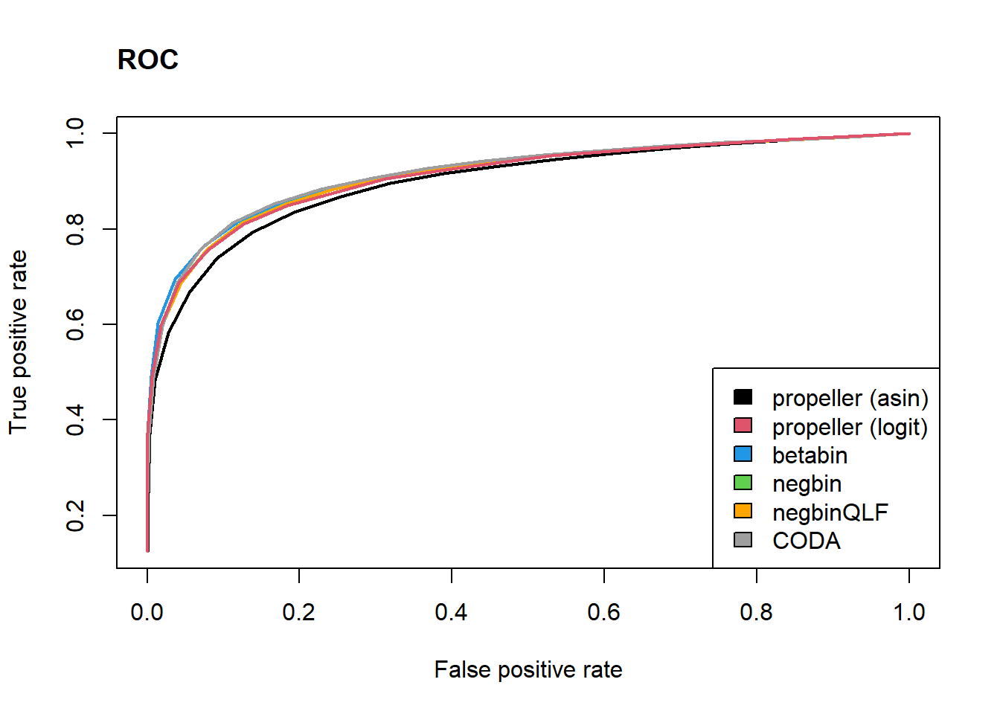
plot(rowMeans(fp.rate.asin)/12,rowMeans(tp.rate.asin)/8,col=mycols[1], type="l",lwd=2,
ylab="True positive rate", xlab="False positive rate", xlim=c(0,0.2))
lines(rowMeans(fp.rate.bb)/12,rowMeans(tp.rate.bb)/8,lwd=2,col=mycols[3])
lines(rowMeans(fp.rate.nb)/12,rowMeans(tp.rate.nb)/8,lwd=2,col=mycols[4])
lines(rowMeans(fp.rate.qlf)/12,rowMeans(tp.rate.nb)/8,lwd=2,col=mycols[5])
lines(rowMeans(fp.rate.coda)/12,rowMeans(tp.rate.nb)/8,lwd=2,col=mycols[6])
lines(rowMeans(fp.rate.logit)/12,rowMeans(tp.rate.logit)/8,lwd=2,col=mycols[2])
legend("bottomright",legend=names,fill=mycols)
title("ROC- zoomed in", adj=0)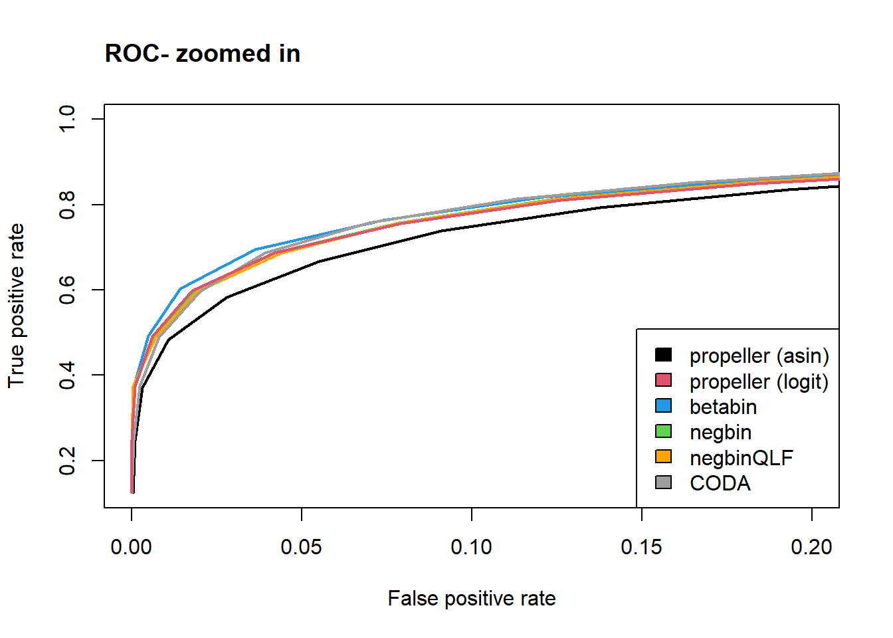
sessionInfo()R version 4.2.0 (2022-04-22 ucrt)
Platform: x86_64-w64-mingw32/x64 (64-bit)
Running under: Windows 10 x64 (build 22000)
Matrix products: default
locale:
[1] LC_COLLATE=English_United States.utf8
[2] LC_CTYPE=English_United States.utf8
[3] LC_MONETARY=English_United States.utf8
[4] LC_NUMERIC=C
[5] LC_TIME=English_United States.utf8
attached base packages:
[1] stats graphics grDevices utils datasets methods base
other attached packages:
[1] gt_0.6.0 pheatmap_1.0.12 edgeR_3.38.1 limma_3.52.1
[5] speckle_0.99.0 workflowr_1.7.0
loaded via a namespace (and not attached):
[1] backports_1.4.1 plyr_1.8.7
[3] igraph_1.3.1 lazyeval_0.2.2
[5] sp_1.4-7 splines_4.2.0
[7] BiocParallel_1.30.2 listenv_0.8.0
[9] scattermore_0.8 GenomeInfoDb_1.32.2
[11] ggplot2_3.3.6 digest_0.6.29
[13] htmltools_0.5.2 fansi_1.0.3
[15] checkmate_2.1.0 magrittr_2.0.3
[17] memoise_2.0.1 tensor_1.5
[19] cluster_2.1.3 ROCR_1.0-11
[21] globals_0.15.0 Biostrings_2.64.0
[23] matrixStats_0.62.0 spatstat.sparse_2.1-1
[25] colorspace_2.0-3 blob_1.2.3
[27] ggrepel_0.9.1 xfun_0.31
[29] dplyr_1.0.9 callr_3.7.0
[31] crayon_1.5.1 RCurl_1.98-1.6
[33] jsonlite_1.8.0 org.Mm.eg.db_3.15.0
[35] progressr_0.10.0 spatstat.data_2.2-0
[37] survival_3.3-1 zoo_1.8-10
[39] glue_1.6.2 polyclip_1.10-0
[41] gtable_0.3.0 zlibbioc_1.42.0
[43] XVector_0.36.0 leiden_0.4.2
[45] DelayedArray_0.22.0 SingleCellExperiment_1.18.0
[47] future.apply_1.9.0 BiocGenerics_0.42.0
[49] abind_1.4-5 scales_1.2.0
[51] DBI_1.1.2 spatstat.random_2.2-0
[53] miniUI_0.1.1.1 Rcpp_1.0.8.3
[55] viridisLite_0.4.0 xtable_1.8-4
[57] reticulate_1.25 spatstat.core_2.4-4
[59] bit_4.0.4 stats4_4.2.0
[61] htmlwidgets_1.5.4 httr_1.4.3
[63] RColorBrewer_1.1-3 ellipsis_0.3.2
[65] Seurat_4.1.1 ica_1.0-2
[67] scuttle_1.6.2 pkgconfig_2.0.3
[69] uwot_0.1.11 sass_0.4.1
[71] deldir_1.0-6 locfit_1.5-9.5
[73] utf8_1.2.2 tidyselect_1.1.2
[75] rlang_1.0.2 reshape2_1.4.4
[77] later_1.3.0 AnnotationDbi_1.58.0
[79] munsell_0.5.0 tools_4.2.0
[81] cachem_1.0.6 cli_3.3.0
[83] generics_0.1.2 RSQLite_2.2.14
[85] ggridges_0.5.3 evaluate_0.15
[87] stringr_1.4.0 fastmap_1.1.0
[89] yaml_2.3.5 goftest_1.2-3
[91] org.Hs.eg.db_3.15.0 processx_3.5.3
[93] knitr_1.39 bit64_4.0.5
[95] fs_1.5.2 fitdistrplus_1.1-8
[97] purrr_0.3.4 RANN_2.6.1
[99] KEGGREST_1.36.0 sparseMatrixStats_1.8.0
[101] pbapply_1.5-0 future_1.26.1
[103] nlme_3.1-157 whisker_0.4
[105] mime_0.12 compiler_4.2.0
[107] rstudioapi_0.13 plotly_4.10.0
[109] png_0.1-7 spatstat.utils_2.3-1
[111] statmod_1.4.36 tibble_3.1.7
[113] bslib_0.3.1 stringi_1.7.6
[115] highr_0.9 ps_1.7.0
[117] rgeos_0.5-9 lattice_0.20-45
[119] Matrix_1.4-1 vctrs_0.4.1
[121] pillar_1.7.0 lifecycle_1.0.1
[123] spatstat.geom_2.4-0 lmtest_0.9-40
[125] jquerylib_0.1.4 RcppAnnoy_0.0.19
[127] data.table_1.14.2 cowplot_1.1.1
[129] bitops_1.0-7 irlba_2.3.5
[131] GenomicRanges_1.48.0 httpuv_1.6.5
[133] patchwork_1.1.1 R6_2.5.1
[135] promises_1.2.0.1 KernSmooth_2.23-20
[137] gridExtra_2.3 IRanges_2.30.0
[139] parallelly_1.31.1 codetools_0.2-18
[141] MASS_7.3-57 assertthat_0.2.1
[143] SummarizedExperiment_1.26.1 rprojroot_2.0.3
[145] SeuratObject_4.1.0 sctransform_0.3.3
[147] S4Vectors_0.34.0 GenomeInfoDbData_1.2.8
[149] mgcv_1.8-40 parallel_4.2.0
[151] beachmat_2.12.0 rpart_4.1.16
[153] grid_4.2.0 tidyr_1.2.0
[155] DelayedMatrixStats_1.18.0 rmarkdown_2.14
[157] MatrixGenerics_1.8.0 Rtsne_0.16
[159] git2r_0.30.1 getPass_0.2-2
[161] lubridate_1.8.0 Biobase_2.56.0
[163] shiny_1.7.1